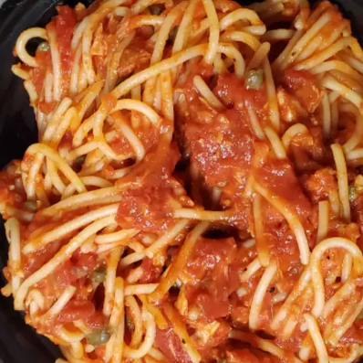

Chef John's Spaghetti al Tonno

Description
Spaghetti al tonno is one of my all-time favorite go to pasta dishes. I love a classic meat sauce as much as the next half-italian, but when I want something quick and easy for a weeknight meal, I reach for the tuna.
What if you don't like fish? Then this is perfect. The taste and texture is really closer to a veal sauce than one made with fish
Ingredients
- 2 tablespoons olive oil
- 1 anchovy fillet
- 2 tablespoons capers
- 3 cloves minced garlic
- 1/2 cup dry white wine
- 1/4 teaspoon dried oregano
- 1 pinch red pepper flakes, or to taste
- 3 cups crushed Italian (plum) tomatoes (such as San Marzano)
- salt and ground black pepper to taste
- 1 pinch cayenne pepper, or to taste
- 1 (7 ounce) can oil-packed tuna, drained
- 1/4 cup chopped fresh flat-leaf parsley
- 1 (12 ounce) package spaghetti
- 1 tablespoon extra-virgin olive oil, or to taste
- 1/4 cup freshly grated Parmigiano-Reggiano cheese, or to taste
- 1 tablespoon chopped fresh flat-leaf parsley, or to taste
Steps
- Heat olive oil in a large saucepan over medium heat.
Cook and stir anchovy and capers in hot oil until anchovy crumbles, about 2 minutes.
Add garlic; cook and stir until fragrant, about 1 minute.
- Pour white wine, oregano, and red pepper flakes into the skillet and increase heat to high; cook until mixture reduces and about 3 tablespoons of liquid remain, 2 to 4 minutes.
- Stir tomatoes into the skillet and bring to a simmer. Season tomato mixture with salt, black pepper, and cayenne pepper. Reduce heat to medium and simmer until slightly reduced, about 10 minutes.
- Stir tuna and 1/4 cup parsley into tomato sauce, breaking up tuna with a wooden spoon while stirring. Reduce heat to medium-low and simmer for about 10 minutes.
- Bring a large pot of lightly salted water to a boil. Cook spaghetti in the boiling water, stirring occasionally until almost cooked through and still slightly firm to the bite, 9 to 11 minutes. Drain and transfer spaghetti back to the pot.
- Pour tomato sauce over spaghetti into the pot; stir to combine, cover the pot with a lid, and let sit until spaghetti is cooked through, about 3 minutes. Ladle spaghetti into bowls, drizzle with extra-virgin olive oil, and sprinkle Parmigiano-Reggiano cheese and parsley over the top.
return to main page